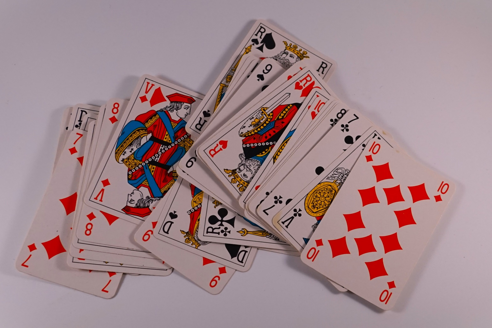
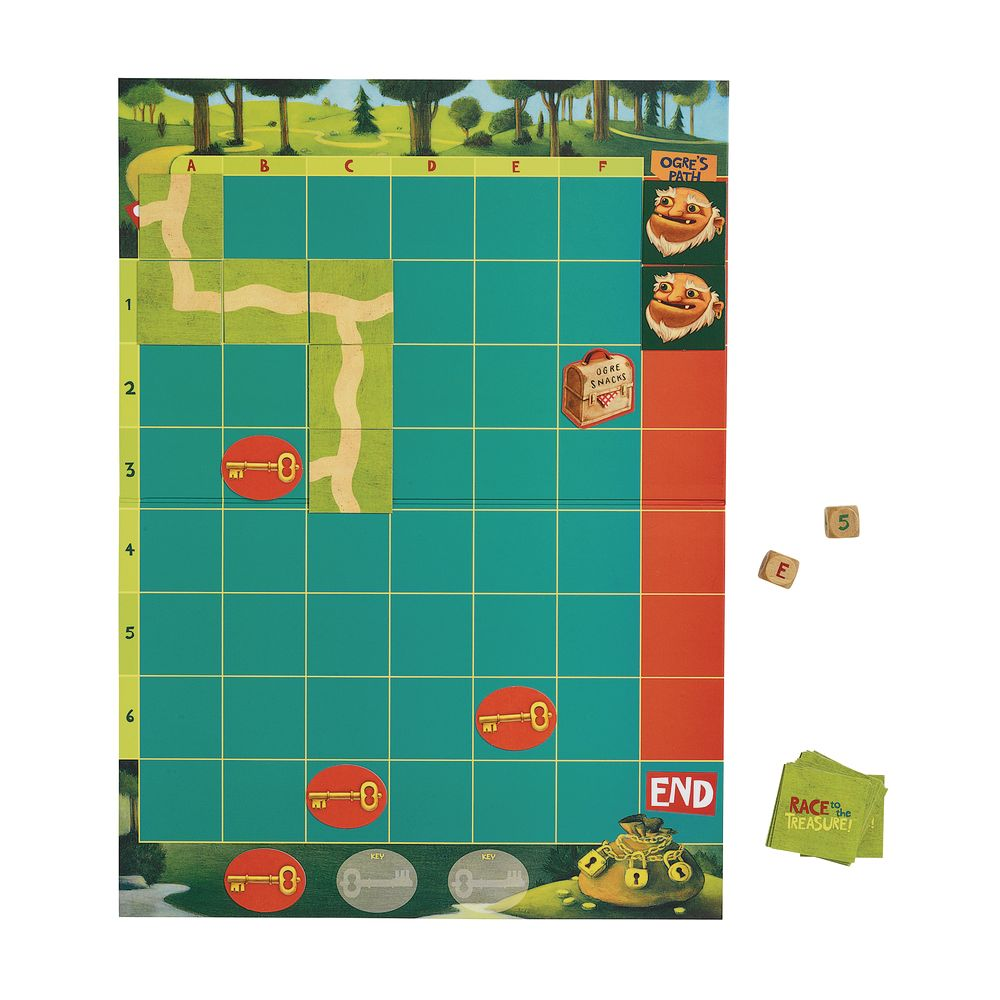

CSCI 310 GUI & Game Programming | Team Project by Noah Vachon & Daris Kadric
An enterprise-level multi-game casino console application programmed with pure object-oriented architecture in C#. Features shared persistence balance tracking ($1,000 baseline) and responsive ASCII-rendered UI with non-blocking key inputs and real-time audio cues.
🃏 Blackjack Pro: Complete rule set featuring Split Pairs, 2:1 Insurance against Ace, Surrender (50% refund), and 3:2 Natural Blackjack payout. Built-in Hi-Lo Card Counting Engine displaying Running Count, True Count based on shoe penetration, and card decks remaining.
💎 Mines Strategy Engine: 5x5 dynamic grid featuring Auto-Pick Mode (A key), Cross/Square/Diagonal area patterns, single-game Undo mechanics with a 10% penalty, and real-time color-coded density risk monitoring.
🎲 Traditional & Proposition Craps: Full Come-Out and Point phases alongside side bets: Field Bets (paying up to 2:1 on 2/12), Place Bets (paying 3:1 on 5/9, 2:1 on 4/10), Any 7, and Any Craps (7:1 payout).
🎡 European & American Roulette: Switchable mode wheel support (2.7% vs 5.26% house edge), Outside bets, High-payout inside splits/corners, 5-number Neighbor bets, and 10-spin color history tracker.
⛳ Escape the Jungle — 3D Mini Golf JavaScript / Three.js
Full 3D Web Game Simulation | Physics & Vector Dynamics
A high-performance browser golf simulation utilizing Three.js. Features realistic vector-based ball roll mechanics, 3D obstacle collision detection against tree stumps, rocks, and logs, and dynamic mouse/keyboard shot trajectory calculations.
Vector Motion & Physics: Custom surface friction, acceleration dampening, and elastic collision handling off geometric obstacle meshes.
Dynamic Raycast Aiming: Real-time color-interpolated target trajectory lines that shift from Green (low) to Yellow and Red (max power level 15).
Progressive Level Design: 3-hole jungle gauntlet (Par 3 "Welcome to Jungle", Par 4 "Rocky Path", and Par 5 "The Gauntlet") with score-to-par tracking.
⚔️ Custom Board & Card Game Simulations C++
Data Structures & Low-Level Memory Management
Engineered an original 7x7 island exploration game and custom card system utilizing low-level data structures (linked lists, stacks, queues, and multi-dimensional matrices) with zero memory leaks.
Dynamic node-based linked lists for flexible player card hands.
Stack-driven undo history and matrix-mapped coordinate hazards.
Strict pointer arithmetic and manual memory destruction.
Visual Project Snapshots


Key Stats
0Core Projects Completed
0CS Courses Completed
0Languages & Frameworks
Core Technical Proficiency
C# / .NET Game Architecture88%
C / C++ (Data Structures, Memory)85%
JavaScript / Three.js 3D Web78%
Python & SQL75%
×
Development & Runtime Environment
C# Casino Console: Built on .NET 7.0 SDK / C# 11 with Windows platform sound hooks via Console.Beep.
Three.js Golf Simulation: Built with Node.js, WebGL, npm http-server, running on modern ECMAScript standards.
Codebase Status: Verified builds with 0 compiler errors and optimized state handling.